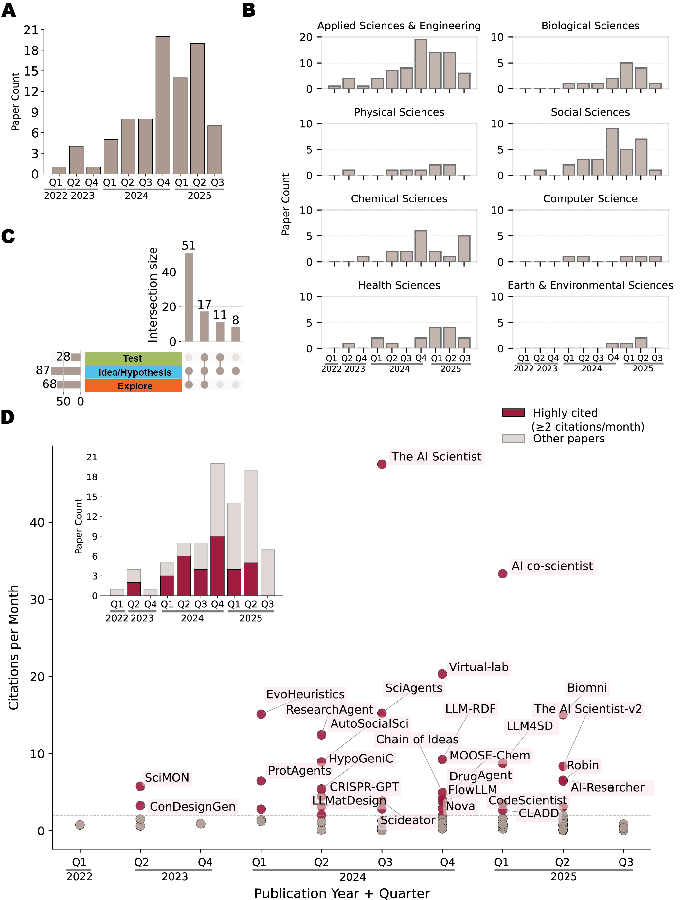
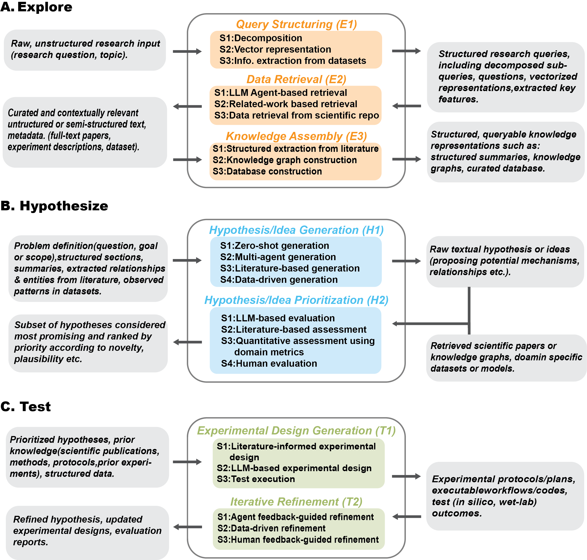
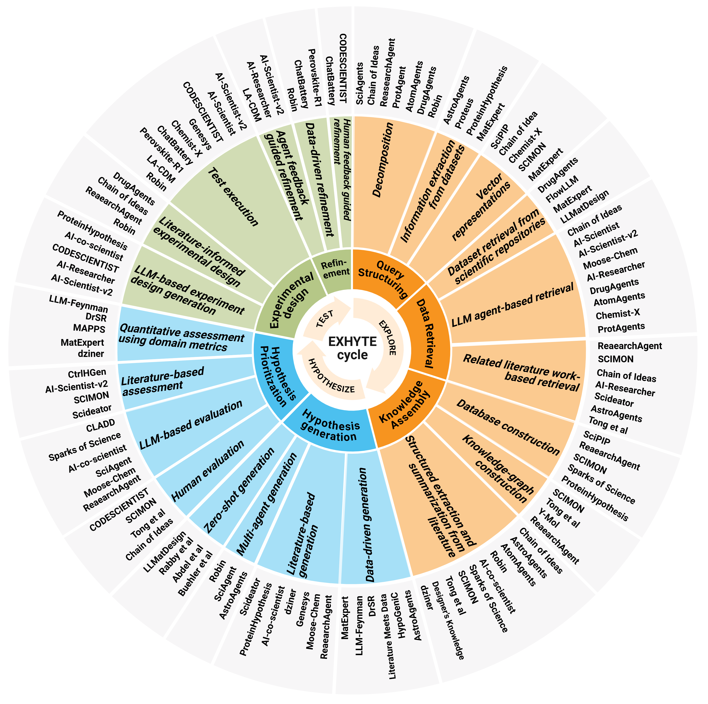

To construct the survey corpus, we focused on the literature published between 2018 and July 2025 to capture recent advances in LLMs and agent systems for scientific discovery. Articles were retrieved through keyword searches on arXiv, bioRxiv, and Semantic Scholar APIs, using queries such as LLM, idea generation, hypothesis generation, scientific discovery, experiment design, material discovery, molecular design, drug discovery, and biomedical discovery. Retrieved results were then manually filtered to remove irrelevant articles and ensure inclusion of high-quality papers from major conferences and journals. The final corpus comprises 87 papers spanning diverse disciplines. Because research in this area is advancing rapidly, a number of relevant papers released after our July 2025 cutoff could not be included in the analyzed corpus; to keep the survey current, these newer studies are incorporated into the accompanying website, which we update on an ongoing basis.
Because EXHYTE is used here as an empirical abstraction of observed AI-for-science workflows, our analysis proceeded in two steps. First, we mapped each paper to the broad workflow functions it addressed: EXPLORE, HYPOTHESIZE, and TEST. Second, we identified recurring implementation strategies within each function and grouped them into substages. This procedure allowed the framework to emerge from observed design patterns in the technical literature rather than from a presupposed general theory of scientific method.
The publication volume in this area surged between 2023 and 2024 and continued to rise sharply in 2025 (Fig. 2A), reflecting both growing cross-domain interest and rapid methodological progress in applying AI to scientific discovery (Fig. 2D). Across subject areas, most papers come from Applied Sciences and Engineering, followed by Social, Chemical, and Biological Sciences (Fig. 2B). Based on our systematic review of the corpus, many papers progress beyond exploration to the HYPOTHESIZE stage, yet fewer continue to the TEST stage (Fig. 2C). This disparity highlights a persistent disconnect between hypothesis or idea generation and empirical or computational evaluation in contemporary AI-assisted scientific discovery.
To systematically analyze and organize this rapidly expanding body of work, we identified recurring AI strategies that address challenges in each EXHYTE substage. Organizing the literature around these strategies moves beyond task- or domain-specific taxonomies and provides a structured view of how AI methods operate across the workflow. In the following sections, we present these strategies substage by substage, defining core patterns, summarizing representative studies and domain-specific variants, and highlighting how each approach is implemented and supported by empirical evidence.

In automated scientific discovery systems, inputs range from natural language queries and high-level research goals to domain-specific papers, datasets, structured specifications, and unexpected observations. In the EXHYTE framework, these inputs are treated as boundary conditions for the workflow rather than as evidence that the system has autonomously formulated a research problem. This distinction is important because many current systems still depend on human researchers to define the initial problem space, provide contextual materials, specify constraints, recognize anomalies, or determine which questions are worth pursuing. Thus, placing inputs at the boundary of EXHYTE is not meant to make problem formulation or anomaly recognition appear trivial. Rather, it makes visible a current limitation of AI-for-science systems: upstream problem framing and research-priority judgment remain only partially automated.
High-level research directions, such as workshop themes, set the scope for the automated scientific workflow. For example, the ICLR 2025 workshop “I Can’t Believe It’s Not Better” (ICBINB) focused on real-world pitfalls, challenges, and negative or inconclusive results in deep learning, a perspective incorporated in AI-Scientist-v2 [12]. Similarly, focused problem statements, such as “How can we improve the energy efficiency of AI models?” (e.g., SCI-IDEA [13]), guide idea and hypothesis generation. Extending this idea, IRIS [14] formalizes user input as research goals that are explicitly transformed into a problem and its motivation/context. For example, the research goal “To improve the balance between quality and diversity in text generation (Problem) by addressing the limitations of existing sampling methods like top-p (nucleus sampling), which often produce incoherent or repetitive outputs at higher temperatures (motivation/context)”. Structured, domain-specific inputs similarly allow users to express goals and constraints in scientific formats. For example, LLMatDesign [5] begins with user-specified chemical compositions and target properties for candidate materials, while AutoMAT [15] accepts user-specified targets such as yield strength, density, or elemental cost constraints. In drug discovery, systems such as [16] operate on query molecules represented as SMILES strings and PiFlow [17] integrates foundational scientific laws or expert-defined principles to guide search.
Beyond explicit goal specification, user-provided resources such as research papers and datasets function as empirical and contextual inputs. Systems like ResearchAgent [18], CodeScientist [19], and HypER [20] leverage literature for retrieval and idea grounding. CodeScientist [19], for example, summarizes vetted code blocks to ensure that generated research ideas are practical, implementable, and executable. Similarly, domain specific datasets provide an empirical foundation for discovery. DrugMCTS [21], for example, employs molecule–protein interaction datasets such as DrugBank [22] and KIBA [23] to support drug discovery tasks.
Together, these examples show that inputs are not merely technical prompts that initiate the EXHYTE workflow. They shape the scope, direction, and epistemic limits of downstream exploration, hypothesis generation, and testing. When users heavily pre-load a system with selected papers, datasets, assumptions, or domain constraints, the resulting workflow may become less sensitive to alternative hypotheses, overlooked evidence, or competing empirical paradigms. For this reason, EXHYTE treats inputs as boundary conditions that reveal, rather than hide, the dependence of

current AI-for-science systems on human problem formulation, contextualization, and judgment.
User query structuring is the first step in the Explore Stage, where it transforms raw, unstructured research inputs into actionable representations. This process employs complementary strategies including decomposition, vector representation, and information extraction from datasets to enable targeted exploration across literature and data (Fig. 3A and 4).
E1-S1: Decomposition. Decomposition transforms complex research queries into tractable sub-queries/questions or tasks that enable focused literature/dataset retrieval, reasoning, and solution design using LLM. Different systems operationalize decomposition at various levels. Chain of Ideas [24] decomposes initial research topic into multiple sub-queries that capture diverse perspectives on the same problem, SCI-IDEA [13] extracts key-phrases that represent the underlying research focus of a scientist’s query, Assay2Mol [25] identifies keywords from user-provided text descriptions of target proteins or phenotypes, Robin [26] formulates a series of general questions based on the name of the target disease that the scientist inputs into the system, DrugLLM [27] decomposes molecules into structural groups to facilitate reasoning about chemical properties.

Building on this principle, several systems employ LLM-based agents to decompose complex user inputs, whether research queries or design tasks, into smaller, manageable sub-tasks and to generate detailed, step-by-step workflow plans. General-purpose frameworks such as ResearchAgent [18], AI-Researcher [39], SciAgent [28], Zhou et al. [55] and domain specific system such as ProtAgent(protein design) [29], AtomAgents(alloy design) [30], MatExpert(material discovery) [4],DrugAgents(drug discovery) [31] all follow similar decomposition pipeline.
E1-S2: Vector representations. Encoding user inputs as vector representations enables efficient retrieval, semantic similarity search, and context-aware reasoning. Frameworks such as Chain of Ideas [24], SciPIP [35], SCI-IDEA [13], SCIMON [36], IRIS [14] transform research queries, questions, background knowledge into embeddings to support retrieval of relevant scientific literature.
In domain-specific applications, Chemist-X [1] encodes molecules as SMILES strings to retrieve reaction conditions for target products, while DrugMCTS [21] identifies structurally similar molecules using vectorized molecular representations. Assay2Mol [25] embeds protein target descriptions and phenotypic data for BioAssay retrieval, and MatExpert [4] employs dual encoders with one for property descriptions and another for structural representations to improve reference material retrieval. Collectively, these systems show how vector representations encode scientific knowledge in a machine-interpretable form, enabling efficient semantic retrieval and context-aware scientific discovery.
E1-S3: Information Extraction from Datasets. Extracting key features and annotations from structured datasets enables automated systems to generate empirical inputs for downstream tasks such as model training, hypothesis formulation, and idea generation. AstroAgents [32], for instance, employs a Data Analyst Agent to identify polycyclic aromatic hydrocarbon (PAH) patterns from user-provided mass spectrometry data, thereby generating testable hypotheses in astrobiology. Proteus [33] integrates bioinformatics tools to uncover biological relationships through statistical analyses, while Qu et al. [33] further identify pairs of biological entities (e.g., protein, clinic) to define research directions from multi-omics datasets. ProteinHypothesis [34] retrieves protein sequence descriptions, structural features, and physicochemical properties to inform LLMs about sequence–structure–function relationships during hypothesis generation. In drug discovery, DrugMCTS [21] extracts molecular properties and annotations from DrugBank [22] and KIBA [23], while MatExpert [4] extracts chemical formulas and physical properties (e.g., formation energy, elemental composition) from databases such as NOMAD [59] and Materials Project [60] to generate candidate crystal structures. LLM-Feynman [6] automates feature selection and iterative refinement to construct high-quality feature sets, which are subsequently used in symbolic regression to derive interpretable physical equations. Together, these systems illustrate how information extraction transforms raw datasets into structured, semantically meaningful inputs that drive empirical reasoning and hypothesis development across scientific domains.
Retrieving literature and datasets is a foundational step in scientific discovery, ensuring that exploration remains grounded in comprehensive and relevant knowledge. Guided by user inputs, this E2 step compiles scientific publications and datasets that support informed hypothesis exploration and validation. We identified three key strategies that capture how systems retrieve information through LLM-based agents, related-work networks, and scientific repositories, respectively (Fig. 3A and 4).
E2-S1: LLM Agent–Based Retrieval. LLM agents now routinely query and curate literature and datasets. General-purpose frameworks such as Chain of Ideas [24] and Graph of AI Ideas [61] use LLMs to generate multiple research queries from an initial topic, capturing diverse conceptual angles. SciAgents [28] and AI-Scientist [38], along with AI-Scientist-v2 [12], retrieve literature via the Semantic Scholar API for novelty checks and evidence gathering.
LLM agents are also tasked with prioritizing the most relevant papers. IRIS [14] introduces a retrieval agent that issues targeted queries answered by the specialized “AI2 Scholar QA” API. Moose-Chem [2] generates titles from background papers to retrieve inspirational works. AI-Researcher [39] designs a “Knowledge Acquisition Agent” that, given reference papers, retrieves additional papers and code repositories from scientific databases.
In domain-specific settings, retrieval is coupled with scientific reasoning. DrugAgent [31] employs an “Instructor Agent” to query domain libraries and translate abstract ideas into executable code via domain-specific examples. AtomAgents [30] integrates a specialized knowledge-retrieval tool that extracts material properties directly from published papers. Chemist-X [1] produces executable code to interrogate repositories such as PubChem for chemical literature and molecular datasets, while ProtAgents [29] retrieves specific data points (e.g., Protein Data Bank (PDB) identifiers) for protein design. In materials discovery, AutoMAT [15] uses LLMs, together with user-defined property targets and constraints, to consult reference handbooks (e.g., titanium alloy databases) and identify candidates meeting elemental criteria.
E2-S2: Related-Work Based Retrieval. Citation networks and semantic similarity are widely used to link related works and surface new directions. ResearchAgent [18], SCIMON [36], HypER [20], and Chain of Ideas [24] expand from an anchor paper by retrieving both citing and cited works to capture the evolution of research themes; HypER further adds LLM-based relevancy scoring. AI-Researcher [39] incorporates multi-step reference selection for each target paper, including citation-pattern analysis (frequency), context analysis (influence on methods/theory/experiments), evidence collection (textual support), and an integrated impact score. SciPIP [35] combines keyword, co-occurrence, and semantics-based retrieval, then applies a cluster-based selection of representative papers. SCI-IDEA [13] queries academic sources using key phrases drawn from a researcher’s work and similar literature. Scideator [40] retrieves multiple analogs per source paper, uses an LLM to generate “purpose–mechanism” pairs, and then issues queries per pair to find additional relevant papers. Domain-focused approaches tailor queries to specialized terms. For example, ProteinHypothesis [34] uses domain-specific keywords (e.g., “Protein Science”) to retrieve metadata (titles, abstracts, links); AstroAgents [32] selects relevant papers and books to provide astrobiology context; and Tong et al. [41] require the presence of terms such as “psychol,” “clin psychol,” and “biol psychol” in titles or abstracts for psychology/neuroscience. Manual and semi-automatic curation complement these methods via direct selection from leading databases (e.g., Sparks of Science [42], Perovskite-R1 [57], Budget AI Researcher [62], Lee et al. [16], Quilodrán-Casas et al. [63], Cheng et al. [50], Ciucua et al. [64]).
E2-S3: Dataset Retrieval from Scientific Repositories. Datasets provide the empirical foundation for analysis, model training, and validation. In drug discovery, DrugMCTS [21] queries databases to retrieve molecules structurally similar to a query compound, associated protein interactors, and binding-pocket information parsed from Protein Data Bank (PDB) files to improve LLM interpretability. DrugAgent [31] retrieves biological datasets from the Therapeutics Data Commons (TDC), which offers structured, AI-ready datasets and benchmarks across drug development stages. In materials discovery, FlowLLM [37] retrieves inorganic crystalline materials from the Materials Project for LLM fine-tuning, and Perovskite-R1 [57] assembles drug-like compounds from a comprehensive library to enhance generalization across chemical space. MatExpert [4] and LLMatDesign [5] access NOMAD [59] and the Materials Project [60] for reference materials used in training, evaluation, and modification workflows. Zhou et al. [55] retrieve crystal structures with compositions or reduced formulas similar to a query from structural databases to identify promising crystal prototypes.
The knowledge-assembly stage transforms unstructured scientific text into structured, queryable representations that enable efficient reasoning during discovery. The existing literature typically employs three strategies: structured extraction and summarization from literature, knowledge-graph construction, and database construction for large-scale retrieval and synthesis (Fig. 3A and 4).
E3-S1: Structured extraction and summarization from literature To make literature readily usable for idea and hypothesis generation, systems extract and summarize standardized sections (e.g., titles, abstracts, methods, results). SciPIP [35], Chain of Ideas [24], SCI-IDEA [13], and AstroAgents [32] implement pipelines that segment papers into consistent fields. Papers like SciPIP [35], AtomAgents [30], Robin [26], Literature Meets Data [48], AI-co-scientist [44] and IRIS [14] further produce concise synopses of key findings. Sparks of Science [42] uses LLMs to extract each paper’s conventional assumption and innovative approach alongside a concise insight summary from abstracts. Several systems including SCI-IDEA [13], Scideator [40], SCIMON [36], and Chen et al. [65] extract facets such as objectives, methods, evaluation, and future work. Domain-tailored extraction includes causal relations in psychology (Tong et al. [41]), question–answer pairs for Perovskite precursors (Perovskite-R1 [57]), frequent-topic mining to guide retrieval (Lee et al. [62]), structured tables of target properties, related structures, and linking mechanisms (Beyond Designer’s Knowledge [45]), parsing mechanical properties and compositions to propose alloys (AutoMAT [15]), and sentence-level evidence selection for property-optimization queries (dziner [46]).
E3-S2: Knowledge graph construction. Knowledge graphs (KGs) encode entities and relations to support structured reasoning and discovery. SCIMON [36] represents tasks, methods, materials, and metrics as nodes, with “used-for” edges to ground generated ideas. Tong et al. [41] construct causal KGs in psychology, where cause and effect pairs are directed nodes with attributes (interpretations) and relation types (causal vs. correlational). Y-Mol [43] builds a biomedical KG with interactions among drugs, genes, and diseases (Drug–Target, Drug–Drug, and Disease–Gene). ResearchAgent [18] assembles an entity-centric store from co-occurrences in literature to expose cross-domain connections (topics, keywords, individuals, events). SciPIP [35] links papers to LLM-extracted keywords in a paper–keyword graph for efficient keyword-based retrieval. Graph of AI Ideas [61] constructs a paper-level graph using structured quadruples (paper, citation position, citation semantics, paper), where citation position captures reference importance and citation semantics defines the purpose of each citation.
E3-S3: Database construction. Curated databases consolidate heterogeneous resources into structured repositories for retrieval, analysis, and synthesis. SciPIP [35] builds a literature database from top venues over the past decade, storing key sections and re-summarizing each paper into a quintuple (keywords, background, ideas, concise methods, core references), with background/ideas encoded as embeddings. ResearchAgent [18] extracts entities from titles/abstracts (e.g., post-2023 Semantic Scholar) and encodes their co-occurrences in a sparse matrix. HypER [20] compiles temporal reasoning-chain datasets linked to related papers for effective reasoning over scientific literature. SCIMON [36] builds corpora from the ACL Anthology and PubMed, organizing the papers with extracted (Background, Target) pairs, seed terms, and their relations. Sparks of Science [42] constructs the “HypoGen” dataset by extracting assumptions, innovations, and core insights from abstracts. ProteinHypothesis [34], Lee et al. [62], and Cheng et al. [50] store vector embeddings of papers from arXiv and major conferences (e.g., NeurIPS, ICLR) to support scalable retrieval.
Hypothesis and idea generation mark the transition from structured knowledge to novel discovery, synthesizing literature, data, and reasoning strategies into creative, testable hypotheses. We identify four strategies commonly employed in the literature, including zero-shot generation, multi-agent generation, literature-based generation, and data-driven generation (Fig. 3B and 4).
H1-S1: Zero-shot generation. Zero-shot generation relies on the internal knowledge encoded in LLMs, thus enabling idea/hypothesis creation without explicit external context-useful when domain-specific training data are limited. Frameworks illustrating this approach include LLMatDesign [5], Buehler et al. [51], Tang et al. [66], Yin et al. [67], Bystronski et al. [68], Abdel et al. [52], Rabby et al. [53], Guo et al. [69], Pu et al. [17], Liu et al. [70], and Manning et al. [71].
H1-S2: Multi-agent generation. Multi-agent frameworks build specialized agents, coordinated under an orchestrator agent to produce and refine hypotheses. AstroAgents [32] employs a hierarchical design, where a ‘Data Analysis’ agent first uncovers key patterns and trends and a ‘Planner’ agent delegates distinct data segments to multiple ‘Scientist’ agents for in-depth exploration and investigation; finally each ’Scientist’ agent operates within its assigned domain to produce novel hypotheses, which are consolidated by an ‘Accumulator’ agent that de-duplicates and integrates the results. The Virtual Lab [72] uses a ‘Principal Investigator’ agent to spawn a team of domain-specific ‘Scientist’ agents and a ‘Scientific Critic’ agent that, through structured meetings, generate and iteratively refine candidate hypotheses and designs (e.g., SARS-CoV-2 nanobody candidates). In the KG-grounded SciAgents [28], an ’Assistant’ agent drafts an initial subgraph to contextualize the idea, an ’Ontologist’ agent defines nodes and interprets edges, and two ’Scientist’ agents iteratively draft, elaborate, and critique detailed hypotheses. Robin [26] specializes in biomedicine and designed an agent (‘Crow’) to identify causal disease mechanisms and suitable in vitro models and another agent (‘Falcon’) to conduct deep literature review to evaluate therapeutic candidates. In chemical discovery, DrugMCTS [21] coordinates multiple sequential agents to incrementally build reasoning paths for protein target identification, where a ‘Molecule-Analysis’ agent produces natural-language molecular reports, a ‘Molecule-Selection’ agent filters candidates, an ‘Interaction-Analysis’ agent explores molecule–protein interactions, and a ‘Decision’ agent synthesizes upstream findings to predict promising targets.
H1-S3: Literature-based generation. Literature-driven approaches retrieve, synthesize, and recombine knowledge from scientific texts to propose novel hypotheses. ResearchAgent [18] and Moose-Chem [2] provide titles/abstracts of various related papers as context for LLM. Genesys [50] formulates new LLM design ideas by modifying parent designs from the Knowledge Engine (KE), which integrates the curated literature with code and external sources. Similarly, dziner [46] generates modifications based on retrieved material-design guidelines mined from unstructured text (e.g. scientific literature and the Internet). Another common strategy is summarization-based synthesis, where relevant sections are distilled and restructured before prompting the LLM (e.g., AI-co-scientist [44], SciPIP [35], ProteinHypothesis [34], Perovskite-R1 [57]). Another approach is facet recombination, in which facets (e.g. purpose and mechanism) are recombined to surface gaps and generate ideas. For example, Scideator [40] constructs analogies from purpose-mechanism pairs across papers; SCI-IDEA [13] analyzes similar facets to detect patterns, inconsistencies, and unexplored areas; Liu et al. [45] and Lee et al. [62] synthesize novel interdependencies among mechanisms or topics not explicitly linked in the source literature; and CODESCIENTIST [19] explores combinatorial idea generation via genetic operators (e.g., crossover, mutation). A complementary line of work is a reasoning chain based generation, which reconstructs explanatory pathways from the noisy/fragmented literature. HypER [20], Sparks of Science [42], and Graph of AI Ideas [61] fall into this line and identify valid chains in the literature graphs and use them as scaffolds for evidence-grounded hypotheses. Finally, KGs are proposed to structure scientific concepts and relations for systematic hypothesis generation. For example, Tong et al. [41] employ link prediction algorithms on causal knowledge graphs to identify high-probability causal relationships among previously unconnected concepts.; Lee et al. [16] integrate biochemical drug-drug relationships from a KG to interpret the network structure, then pass these summaries to a prediction agent; Gao et al. [54] generate plausible logical hypotheses from KG entity sets.
H1-S4: Data-driven generation. Structured datasets provide a complementary source, where data instances and patterns can guide hypothesis formation. One group of systems detects patterns and supplies them as context to the LLM. In AstroAgents [32], a ‘Data Analyst’ Agent examines mass spectrometry to uncover PAH (Polycyclic Aromatic Hydrocarbons) distributions and alkylation patterns, highlighting unexpected findings. ProteinHypothesis [34] analyzes sequence motifs, secondary-structure correlations, and functional-site patterns from experimental data. Proteus [33] runs targeted statistical analyses over multi-omics data using bioinformatics tools, recording quantified relationships between biological entities (e.g. proteins, transcripts, variants) and clinical features (e.g. survival time, tumor stage) as edges in a ‘Conclusion Graph’ that then grounds LLM hypothesis generation. Biomni [73], a general-purpose biomedical agent, follows similar approach but composes its analytical pipeline dynamically through code execution by LLM agent, rather than relying on a fixed analyst module. Another line seeds the LLM with few-shot data instances: HypoGeniC [47], Literature Meets Data [48], and Hypotheses for Inductive Reasoning [74] provide small sets of (input, label) pairs to induce initial hypotheses. In DrSR [49], ChatSR [75], and LLM-Feynman [6], observational pairs guide LLM in analyzing structural relationships, which are then used by symbolic regression to produce interpretable formulas. Zheng et al. [76] discover novel molecular patterns using structural/chemical features and then use them to predict molecular properties. Liu et al. [77] retrieve domain-specific drug data as demonstrations for LLM to perform drug-editing tasks. In material, MAPPS [55] queries structural databases for crystal prototypes with compositions/reduced formulas similar to a query, using them to generate initial candidate structures; MatExpert [4] fine-tunes a small LLM on curated transition pathways and target materials from NOMAD to generate plausible transition pathways. In healthcare and clinical design, Zhu et al. [78] and Bani et al. [56] fine-tune LLMs on patent–title pairs or clinical datasets containing various clinical scenarios and ground-truth diagnoses to enable new design ideas and hypotheses.
Hypothesis prioritization focuses analytical and computational resources on the most promising ideas by evaluating their novelty, plausibility, feasibility, and potential impact. We identify four common strategies: LLM-based evaluation, literature-based assessment, quantitative assessment using domain metrics, and human evaluation (Fig. 3B and 4).
H2-S1: LLM-based evaluation. LLM agents can act as evaluators, ranking ideas/hypotheses on clarity, feasibility, novelty, plausibility, consistency, and impact. Exemples include ResearchAgent [18],AstroAgents [32], SciAgents [28], AI-co-scientist [44], Sparks of Science [42], Moose-chem [2], Tong et al [41], PROTEUS [33], Rabby et al [53], ProteinHypothesis [34]. Robin [26] uses an LLM judge to rank drug candidates by scientific rationale, pharmacological profile, and methodology of the supporting literature. AstroAgents [32] uses a critic agent to assess the alignment between hypotheses and observational data. CLADD [16] evaluates drugs by predicting toxicity from a molecule’s chemical representation (SMILES), inferring likely protein targets (mechanism of action) from an LLM-agent-generated report on the query molecule, and categorizing molecular properties from a generated textual description concatenated with the SMILES representation. DrugMCTS [21] extends this by integrating LLM-based reward functions within a Monte Carlo Tree Search framework to score molecular–protein interactions using structural (binding pocket) and literature-derived contextual evidence. ChatBattery [58] uses a ‘Search’ agent to verify novelty by querying the Materials Project database and a ‘Retrieval’ agent to identify similar lithium-based compounds from the ICSD, guiding subsequent hypothesis revisions. Liu et al [45] evaluate materials design hypotheses based on the alignment between the stated materials design goals and the content of the hypothesis. LLM-Feynman [6] employs an LLM to assign ‘interpretability score’ to its own generated formulas, quantifying their physical and chemical meaning and ProtAgents [29] assess success in generating proteins with desired secondary structures.
H2-S2: Literature-based assessment. To ensure that generated hypotheses are both novel and scientifically grounded, many systems incorporate literature-based assessment as a critical step. This process involves retrieving relevant prior work, evaluating semantic similarity, and determining whether the proposed idea contributes to new insights. Systems such as Scideator [40], HypER [20], SCIMON [36], AI-scientist [38], AI-Scientist-v2 [12], AstroAgents [32], Graph of AI Ideas [61], SCI-IDEA [13], SciAgents [28], Budget AI Researcher [62], Cheng et al [50], Lee et al [62] deploy LLM-based ‘Novelty Checker’, which assesses the idea’s novelty against relevant papers. HypER [20] evaluates whether the rationale and hypothesis track the logic and chronology of literature chains. CtrlHGen [54] measures the alignment between hypothesis conclusions and the observed entities in the knowledge graph using multiple similarity metrics. These metrics are incorporated into the reward function that guides hypothesis generation.
H2-S3: Quantitative Assessment Using Domain Metrics. Quantitative evaluation using domain-specific scientific metrics and computational models provides an objective measure of hypothesis. dziner [46] calculate ‘synthesizability’ (e.g. synthetic accessibility score, quantitative estimate of drug-likeness (QED score)) using PubChem-scale molecule dataset and specialized tools. The effectiveness of a proposed modification is then evaluated with domain-expert predictive models, and the LLM ultimately decides whether to accept or reject the modification based on these quantitative results. Matexpert [4] evaluates generated material structural validity, chemical feasibility and stability using quantitative and physics-informed metrics. ChatBattery [58] verifies the stability and properties of the top-ranked cathode candidates using a machine learning surrogate model(MACE-MP) that predicts the energies and forces of the sampled structures. MAPPS [55] evaluates crystal structures for structural quality, thermodynamic stability, novelty, and accuracy. Liu et al [77] compare edited molecules with desired properties, quantify binding affinity for peptide editing and secondary structural content for protein secondary structure editing relative to desired targets. LLMatdesign [5] predicts properties via a Machine Learning Property Predictor (MLPP) after a Machine-Learning-Force-Field (MLFF) based relaxation of modified material structures, declaring success when the predicted properties of the new material align with target specifications. In symbolic reasoning and equation discovery, DrSR [49] and ChatSR [75] iteratively improve model output by assessing generated equations using numerical fitness scores and domain performance metrics. LLM-Feynman [6] provides a comprehensive quantitative evaluation framework using the Coefficient of Determination and Mean Absolute Error (MAE) for regression tasks, and accuracy, precision, recall, F1 score, and cross-entropy loss for classification-based symbolic modeling.
H2-S4: Human evaluation. Expert review complements automated scoring with contextual judgment and domain nuance. Chain of Ideas [24], Tong et al [41], AstroAgents [32], SciPIP [35], SciMON [36], CODESCIENTIST [19], SCI-IDEA [13], Literature Meets Data [48], ChatBattery [58], Rabby et al [53] and HypER [20] incorporate expert feedback to refine, rank, or filter hypotheses.
Experimental design generation translates top-ranked ideas and hypotheses into verifiable experimental plans, creating a systematic path to evaluate scientific propositions. It comprises three common strategies: literature-informed design, LLM-based design generation, and test execution (Fig. 3C and 4).
T1-S1: Literature-informed experimental design. This strategy leverages prior studies and domain references to ground experimental plans in established scientific practices. Robin [26] selects top-ranked ’in vitro’ models from the literature review to define therapeutic testing strategies and generates concise experimental outlines. ResearchAgent [18] synthesizes problem information, methods, and existing designs from the literature into new protocols that emphasizing clarity, robustness, reproducibility, validity, and feasibility. Chain of Ideas [24] uses the few-shot prompting with examples of prior experiments, together with user-provided ideas and key entities, to guide design generation. Similarly, DrugAgent [31] constructs executable code from curated documentation, compiled from widely used libraries and models from the literature. Together, these approaches ensure the design evidence-based while adaptable to novel scientific contexts.
T1-S2: LLM-based experiment design generation. Beyond literature grounding, systems increasingly rely on LLM reasoning to autonomously generate experimental designs, often producing executable workflows or code for validation. AI-Scientist-v2 [12] employs ‘Agentic Tree Search algorithm’ to systematically explore hypotheses during the experimentation phase. For each node in the experimental pathway, an LLM proposes a concrete experimentation plan and the Python code to implement it. Similarly, AI-researcher [39], Lee et al [74], Lui et al [70], Cheng et al [50] transform research analyses and development plans into executable code via LLM agents. In physics-based discovery, Zhou et al [55] invoke tools from a physics toolbox to translate workflow steps into executable, physically grounded Python code. CODESCIENTIST [19] uses a ‘planer’ agent that ingests the idea, expert comments, and a codeblock library to produce a concrete plan and required codeblocks. AI-co-scientist [44] features a ‘Generation’ agent that proposes experimental protocols for downstream validations. In biomedical experimental setting, ProteinHypothesis [34] assesses the experimental feasibility of hypotheses and maps the hypotheses to laboratory techniques, while Chemist-X [1] generates control scripts for an agent to operate wet-lab platforms for validation. Brunnsåker et al. [79] likewise uses LLM agents to turn a hypothesis into an experimental plan and auto-formalize it into a validated, machine-readable protocol for an automated yeast platform.
T1-S3: Test execution. This strategy validates LLM-generated hypotheses via in silico or wet-lab experiments, closing the discovery loop by determining the real-world feasibility and accuracy of these hypotheses. In Robin [26], the experimental strategies are proposed for validating therapeutic candidates by identifying a relevant disease mechanism and in vitro models and executed by human researchers in an iterative lab-in-the-loop framework. In clinical hypothesis refinement, LA-CDM [56] uses a ‘decision’ agent to request additional diagnostic tests to reduce uncertainty. Perovskite-R1 [57] implements recommended protocols and fabricates complete solar cell devices to assess the efficacy of the selected additives. ChatBattery [58] synthesizes and tests cathode candidates through wet-lab experiments. Chemist-X [1] validates generated reaction conditions through fully automated wet-lab experiments under LLM supervision. Brunnsåker et al. [79] executes auto-formalized protocols on a fully automated cell-culture and mass-spectrometry platform. Abdel et al [52] test LLM-proposed drug combinations in the lab.
Execution also includes computational validation. Tang et al [66] apply regression-based statistical models to test hypotheses about LLM’s explanatory power for societal outcomes. Genesys [50] evaluates the proposed language model design by verifying code correctness, conducting training-time experiments, and measuring success via a multi-scale fitness function. CODESCIENTIST [19] follows an iterative generate-execute-reflect debugging loop, while AI-Scientist [39] and AI-Scientist-v2 [12] test LLM-generated experiment prototypes by running associated Python code to test conceptual validity.
Iterative refinement improves the quality and feasibility of hypotheses, ideas, and experimental designs by incorporating feedback from agents, data, and experts, ensuring responsive to new information and evaluations. There are three common strategies: agent feedback–guided refinement, data-driven refinement, and human feedback–guided refinement (Fig. 3C and 4).
T2-S1: Agent feedback–guided refinement. Systems employ feedback loops in which LLM-based agents iteratively revise hypotheses, code, and designs to improve feasibility and correctness. AI-Scientist-v2 [12] refines algorithm nodes through agent feedback by evaluating ’parent nodes’ outcome, where buggy parents trigger debugging using child nodes, while non-buggy parents prompt experimental refinement. Key metrics (e.g., loss values, training data) are logged and visualized and a Vision Language Model (VLM) then critiques plots for label clarity, legend completeness, and data accuracy. Nodes flagged by the VLM are marked buggy, whereas validated nodes are retained, enabling continuous, feedback-driven improvement. Similarly, AI-researcher [39] utilizes an ‘Advisor’ agent to propose actionable refinement spanning implementation details, validation studies, visualizations, and comparative analyses. In clinical settings, the ‘Hypothesis’ agent in LA-CDM [56] updates diagnoses and confidence estimates as patient-state information evolves, repeating until a final diagnosis is produced.
T2-S2: Data-driven refinement. Data-driven refinement keeps hypotheses, models, and experimental plans empirically grounded by updating them with new computational and experimental evidence. In Robin [26], human scientists upload raw or semi-processed data (e.g., flow cytometry, RNA-seq data), which are processed by the ‘Finch’ analysis agent with the requested analysis to generate statistical tests, differential gene expression plots. Robin also distills actionable insights from the analysis results and proposes follow-up assays. Fully automated systems such as Chemist-X [1] execute LLM-generated reaction conditions with closed-loop wet-lab experiments and quantify reaction outcomes (e.g., the product yield using High-Performance Liquid Chromatography). Abdel et al. [52] validate LLM-generated drug combinations experimentally and compute Highest Single Agent (HSA) synergy scores to quantify performance. In materials science, ChatBattery [58] characterizes physical/structural performance with power conversion efficiency, film quality, and stability. Perovskite-R1 [57] assess the efficacy of the selected additives by fabricating complete solar cell devices and evaluating metrics such as Power Conversion Efficiency (PCE), film quality, and long-term device performance. In social science, Tang et al [66] convert natural language hypotheses into interpretable embeddings used as explanatory variables in a linear regression model to predict societal outcomes. Coefficients are tested for significance, non-significant hypotheses are pruned, and the feedback guides subsequent LLM proposals.
T2-S3: Human feedback guided refinement. Expert review adds domain-specific judgment that complements automated evaluations. In ChatBattery [58], human researchers revise hypotheses after examining experimental outcomes, aligning hypotheses with objectives and constraints when results indicate limited validity or feasibility. CODESCIENTIST [19] generates concise reports indicating whether each hypothesis was confirmed, rejected, or inconclusive, and final expert screening substantially narrows the candidate set.
The previous sections examined how individual studies address specific stages and substages of the EXHYTE framework. This stage-by-stage analysis provides a granular view of methodological contributions, but it does not fully show how these components are combined in existing AI-for-science systems. To illustrate workflow integration in practice, we examine two published systems from the surveyed literature: AI-Researcher [39] and AI Co-Scientist [44]. These systems were selected as case studies because they connect multiple EXHYTE functions within relatively complete workflows while differing in modality, degree of autonomy, and human involvement. AI-Researcher illustrates an in silico workflow centered on literature, code, algorithm design, and computational evaluation, whereas AI Co-Scientist illustrates a scientist-in-the-loop workflow that links LLM-based reasoning with wet-lab validation. We use these examples not as systems proposed by us, but as representative cases for analyzing how existing methods instantiate the EXHYTE workflow abstraction.
The goal of the AI-Researcher system is to design a complete research pipeline with minimal human intervention capable of systematically targeting the conceptual frontiers of science, deliberately seeking conceptual gaps, contradictory findings, and emerging patterns across literature and implementations. It begins with a curated collection of approximately 15–20 reference papers, along with optional datasets, that form the foundation of knowledge for the system. These sources mirror the intellectual basis of a target publication, providing the conceptual and methodological context from which new discoveries emerge.
Explore. During the exploration stage, AI-researcher establishes the technical and conceptual groundwork for autonomous algorithm design. This process is jointly managed by the Knowledge Acquisition Agent and the Resource Analyst Agent, supported by their respective sub-agents. The Resource Analyst Agent decomposes the research objective into atomic academic concepts, which are fundamental, indivisible elements requiring targeted investigation. Guided by these concepts, the Knowledge Acquisition Agent retrieves relevant papers and code repositories from scientific databases, applying multi-criteria filtering to select high-quality sources (E2-S1/S2). The Paper Analyst sub-agent extracts mathematical formulations from LaTeX files using a retrieval-augmented generation (RAG) approach (E3-S1), while the Code Analyst identifies corresponding code implementations, establishing explicit bidirectional mappings between theory and code (E3-S3). The resulting structured report provides the empirical and theoretical foundation for downstream reasoning.
Hypothesize. Building on the knowledge assembled during exploration, the Idea Generator identifies conceptual gaps, contradictory findings, and emerging patterns across literature and implementations (H1-S3). It employs a Divergent–Convergent Discovery Framework: the divergent phase produces multiple conceptually distinct research directions, while the convergent phase evaluates them using criteria such as novelty, soundness, and transformative potential (H2-S1/S2). The Advisor Agent provides expert-style feedback linking theoretical concepts to implementation plans, embodying the human-in-the-loop evaluation principle (H2-S4).
Test. The testing phase operationalizes selected hypotheses through experimental planning, implementation, and iterative refinement. The Plan Agent generates a comprehensive development plan, including dataset selection, training/testing methodology, and evaluation metrics (T1-S1). The Code Agent translates this plan into executable implementations, verifying dataset usage and experimental consistency (T1-S2). Results are analyzed by the Experiment Analysis Agent, which recommends code modifications and further experimentation (T2-S1). Finally, the Automated Documentation Agent revises the manuscript using an academic checklist to ensure clarity, reproducibility, and completeness (T2-S3). Together, these stages demonstrate a continuous feedback loop linking hypothesis generation to empirical validation within a coherent in silico research pipeline.
The primary goal of the AI Co-scientist is to accelerate the process of scientific discovery by uncovering new, original knowledge operating within a “scientist-in-the-loop” collaborative paradigm. AI Co-Scientist implements the EXHYTE framework with physical experimentation by coupling LLM reasoning with wet-lab validation. The system accepts multiple input types from the human scientist, most critically a research goal, which may range from concise statements to long documents containing numerous prior publications.
Explore. Upon receiving the research goal, AI Co-Scientist parses it into a research plan configuration specifying desired outputs, constraints, and evaluation criteria (E1-S1). This configuration serves as a blueprint for downstream hypothesis generation. The Generation Agent then explores relevant literature via web search and retrieval tools (E2-S1/S2) to identify promising directions for novel findings.
Hypothesize. The Generation Agent grounds its reasoning in summarized prior work and produces hypotheses and research plans (H1-S3). A Reflection Agent simulates a scientific peer-review process, critically examining each hypothesis for correctness, novelty, and evidential grounding (H2-S2). Quick reviews are followed by comprehensive evaluations that integrate external search and evidence retrieval to assess validity. For complex hypotheses, deep verification decomposes each claim into constituent assumptions, which are independently examined to detect invalid components. The Ranking Agent employs an Elo-style tournament framework to compare hypotheses through multi-turn debates, scoring them on novelty, correctness, and testability (H2-S1). The top-ranked hypotheses are iteratively refined by an Evolution Agent (T2-S1/S3).
Test. The testing stage connects LLM-generated hypotheses to real-world validation. AI Co-Scientist has been deployed in several biomedical domains, with wet-lab validation. Notably, the system generated the hypothesis that chromosomal phage-inducible chromosomal islands (cf-PICIs) hijack phage tails to expand host range, which was experimentally validated [80]. This “tail-hijacking” mechanism revealed a previously unknown route for horizontal gene transfer in bacteria, advancing understanding of antimicrobial resistance evolution. This case exemplifies how EXHYTE-integrated reasoning—spanning literature exploration, hypothesis generation, prioritization, and refinement—can produce experimentally verified discoveries.
Together, AI-Researcher and AI Co-Scientist illustrate how EXHYTE strategies interconnect across modalities. In both, Explore stages ground the system in literature and data; Hypothesize stages generate and prioritize testable ideas; and Test stages operationalize and refine them through computation or experimentation. These integrated workflows demonstrate the practical synthesis of the modular strategies surveyed earlier. This integration, however, is achieved through extensive orchestration. Both systems decompose the discovery pipeline into specialized, prompted agents connected by explicit control logic. This fragmentation is not inherently a weakness: separating roles improves interpretability, isolates failures, and allows targeted prompting and verification at each step. It also, however, introduces coordination overhead, numerous inter-agent interfaces that can drift or fail, and reproducibility challenges arising from accumulated orchestration logic. Much of this partitioning reflects the current engineering strategy for eliciting reliable behavior from general-purpose LLMs rather than an intrinsic requirement of scientific discovery; accordingly, newer general-purpose coding agents (e.g., Claude Code, Codex), whose explicit planning and execution phases can spawn sub-agents on demand, are beginning to collapse several of these hand-specified roles into fewer, more capable agents.